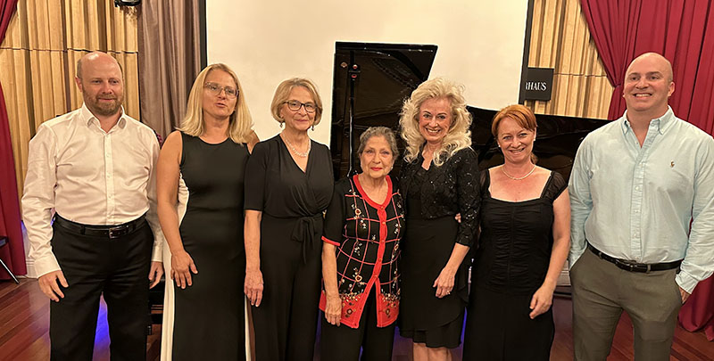
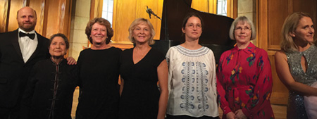
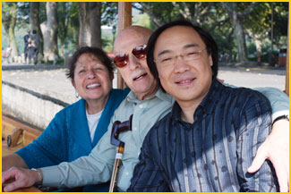
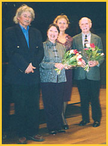
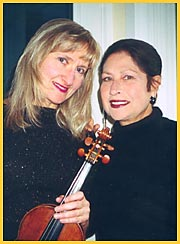
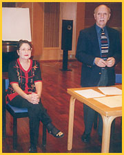

RECENT ENGAGEMENTS
May 17, 2026:
The Lillibridge Ensemble gave a recital at The First Presbyterian Church of New Haven on Whitney Avenue, featuring Shostakovich and Brahms Quintet.
May 15, 2026:
The Lillibridge Ensemble gave a recital at Evergreen Woods, North Branford, CT, featuring J.S. Bach, Handel, Shostakovich, and Brahms.
April 26, 2026:
The Lillibridge Ensemble's album of Schumann, Franck, and Fauré Violin Sonatas received a glowing review from Jerry Dubins of Fanfare Magazine.
April, 2026:
Madeleine and The Lillibridge Ensemble have released three new albums on Romeo Records. Video versions are are available on YouTube, but they are also on Spotify and other streaming platforms
December 29, 2025:
The Lillibridge Ensemble released a duo recording of Debussy's Sonata for violin and piano.

November 21, 2025:
The Lillibridge Ensemble gave a recital at Evergreen Woods, North Branford.
October 3, 2025:
The Lillibridge Ensemble continued the International Music Festival with a special Day 4 concert at Evergreen Woods.

September 28 & 30, 2025:
The Lillibridge Ensemble with guest pianists performed at the International Music Festival in Hartford and West Hartford, CT.


May 30, 2025:
The Lillibridge Ensemble performed a duo recital at Evergreen Woods Recital Hall in North Branford, CT.
May 17, 2025:
The Lillibridge Ensemble performed a duo recital at Westminster Presbyterian Church in West Hartford, CT.
May 10, 2025:
The Lillibridge Ensemble gave a duo recital at Easton Congregational Church in Easton, CT.
December 6, 2024:
The Lillibridge Ensemble gave a recital at Evergreen Woods, North Branford. They performed Dvořák Piano Quintet No. 2 and Brahms Sonata in D minor for Violin and Piano.
(Click photos for full image)
Photos: Richard Petrelli
Photos: Fernando Pastor
Video Screencaps: Fernando Pastor
Click here for a video of the Dvořák Quintet.
Click here for a video of the Brahms Sonata.
Photos: Richard Petrelli

Photos: Fernando Pastor
Video Screencaps: Fernando Pastor

Click here for a video of the Dvořák Quintet.
Click here for a video of the Brahms Sonata.

The Lillibridge Ensemble – photo: Christina Schenker
(Click for full image)
(Click for full image)

Raphael Ryger closeup – photo: Christina Schenker
(Click for full image)
(Click for full image)
November 17, 2024:
The Lillibridge Ensemble gave a recital at the Neighborhood Music School in New Haven. Below is a video of the performance of Brahms Violin Sonata no. 3 in D Minor with Madeleine and Raphael Ryger.
November 3, 2024:
The Lillibridge Ensemble gave a recital at The First Presbyterian Church of New Haven. Below is a clip from the performance of Brahms Violin Sonata no. 3 in D Minor with Madeleine and Raphael Ryger.
September 22, 2024:
Madeleine gave a recital celebrating her 86th birthday.
April 7, 2024:
The Lillibridge Ensemble, Quintet recital at Klavierhaus with violinists Raphael Ryger and David Clampitt, violist Krystyana Czeiner, and cellist Karen Ryger.
December 19, 2023:
Madeleine recently found this note from her teacher Wilhelm Kempff, from when she first met him in 1952.
September 17, 2023:
Madeleine performed again at The Klavierhaus International Music Festival, Day 2 on their Youtube Channel.

(Click for full image)
From left to right: János Kéry, Anna Kijanowska, Robyn Metz Riggers, Madeleine Forte, Linda Jo Faylor-Whitman, Ildikó Bartha, Daniel Immel.
youtube.com/c/klavierhaus
September 10, 2023:
The Lillibridge Ensemble performed at The Klavierhaus International Music Festival, Day 1 on their Youtube Channel.
The Lillibridge Ensemble Performed César Franck's Sonata for violin and piano and Frédéric Chopin's Nocturne No. 20 in C♯ minor.

 (Click for full image)
(Click for full image)

youtube.com/c/klavierhaus


(Click for full image)
From left to right: Daniel Immel, Matthew Bengtson, Anna Kijanowska, János Kéry, Madeleine Forte, Ildikó Bartha, Raphael Ryger, Karen Ryger, Dmitry Rachmanov.
youtube.com/c/klavierhaus
October 9, 2019:
The Recordings page now has a link to "Videos," which contains Madeleine Forte's YouTube videos that are not otherwise represented on this site.
September 15, 2019:
The Lillibridge Ensemble, Trio recital with violinist Raphael Ryger and cellist Karen Ryger.

July 26, 2019:
The September 2018 concerts at the International Music Festival at Yale University were mentioned in the Winter 2019 issue of The Triangle (112:4).

(Click for more details)
From left to right: Dr. Janos Kery, Dr. Madeleine Hsu Forte, Debra Riedel, Robyn Metz Riggers, Sara Apostol Opposits, Suzanne Lovejoy, and Dr. Anna Kijanowska.
May 5, 2019:
The Bel-Etre Ensemble recital at Cultural Arts Center, CT.

September 9 and 16, 2018:
International Music Festival at Yale University in memory of Allen Forte and the celebration of Madeleine's 80th birthday.

September 5, 2018:
A Tribute to Madeleine Forte by conductor and opera coach Shari Rhoads, who studied with Madeleine Forte at Boise State University.
February 25, 2018:
Trio recital with violinist Raphael Ryger and cellist Karen Ryger.
September 3, 2017:
Solo recital at Whitney Center, Hamden, CT.
December 2, 2016:
Solo recital at the Albertus Magnus Institute of Learning in Retirement, New Haven, CT.
September 15, 2013:
Madeleine Forte was honored by the Yale University Department of Music on the occasion of her 75th birthday with an International Piano Celebration.
October 16, 2011:
Madeleine Forte was honored by Boise State University, where she taught for many years, at a “Mad about Madeleine” piano party. A Steinway grand piano donated in her honor was dedicated at the event, which was co-sponsored by Boise State University Advancement and Alumni Association.
October 2009:
Madeleine Forte was the honored guest pianist at the “First National Symposium of Musical Analytics” at the Shanghai Conservatory, October 26–29, 2009. She performed two piano recitals on Frederic Chopin and Olivier Messiaen and conducted a piano masterclass.

Lake Xihu: Madeleine Forte, Allen Forte, Daqun Jia
2007–2008:
“The Bel-Être Ensemble” in concerts in the New York & Connecticut areas.
2007–2008:
Performances with violinist Pedro Pinyol and cellist Mariusz Skula in the New York & Connecticut areas. Music by Beethoven, Chopin, Brahms, Franck, Ornstein, Tansman, Castelnuovo-Tedesco, Bloch, Tcherepnin, and Barber.

September 20–22, 2007:
Masterclasses and lecture-recital with Allen Forte at the University of Western Ontario, Canada.
April 3–8, 2007:
Masterclasses and concert with Pedro Pinyol at the University of North Texas.
April 24, 2006:
The Skula-Forte duo performs in New York.
March 26, 2006:
Cello and piano recital with Luc Dewez in Astoria Concerts, Brussels, Belgium.
November 15–30, 2005:
Performances, lectures, and masterclasses in Seoul, Korea, at Hanyang University and Seoul Conservatories.


Summer 2005:
Research Associate, Yale Summer Program, Salzburg Seminar at the Schloss Leopoldskron; Piano Ensemble Concerts with Allen Forte. Piano Ensemble Concert with Allen Forte at the Chateau de Goulaine, Nantes, France.


February 6–11, 2005:
Residency at the University of North Texas, Denton.
Nov 7 and 12, 2004:
Recitals in Paris and Nantes, France.
October 23, 2004:
Johns Hopkins University: lecture-recital with Allen Forte on Liszt and Petrarch at the conference “Petrarch and the Arts.”

August 5, 2004: Piano Recital at the International Piano Institute of Santa Fe, Summer Festival (photo above).
June, 2004:
Masterclasses at Musashino Music Academy, Tokyo, Japan, for classes of Professor Kyoko Ito.
April 4, 2004:
Violin and Piano recital for Westchester Musicians, N.Y.
March 1, 2004:
Visiting Professor at the University of British Columbia, Vancouver.
February 24–29, 2004:
Visiting Professor at the University of Washington, Seattle.
January 18, 2004:
Chamber Music at Yale University.
April 3–4, 2003:
International Conference, Estonian Academy of Music, Tallinn, Estonia; lecture-concert with Allen Forte and masterclasses on American and French music.
March 2003:
Messiaen lecture-recital and masterclass at the Akademia Muzyczna, Wrocław, Poland.
October 19–26, 2002:
Visiting Trotter Professorship, University of Oregon, Eugene.
August 31, 2002:
Conservatory of Music, Oslo, Norway: Piano recital.
August 29, 2002:
Conservatory of Music, Oslo, Norway: Debussy lecture-recital.
June 20–23, 2002:
Messiaen 2002 International Conference, Sheffield, U.K., piano recitalist.
April 10, 2002:
Peabody Conservatory, lecture-recital: Messiaen Early Piano Music.
March 19–20, 2002:
Southwestern University, Georgetown, Texas, recital and lecture-recital.
October 5, 2001:
Piano lecture-recital “Messiaen” at the Eastman School of Music.
June 11, 2001:
Lecture-recital (with Allen Forte, commentator) at Universität für Musik und Darstellende Kunst, Vienna, Austria: “An Introduction to the Piano Music of Olivier Messiaen.”
April 22, 2001:
Recital at the Yale Collection of Musical Instruments of works by Frederic Chopin on period pianos, the Erard and the Pleyel.
April 27–28, 2000:
Masterclasses at the Hong Kong Baptist University and the Academy for the Performing Arts, Hong Kong.
April 25, 2000:
Recital at the Hong Kong Baptist University, China.
April 2000:
Recital and masterclass at the Hong Kong Baptist University, China.
 Madeleine Forte, Dec 4, 2022
Madeleine Forte, Dec 4, 2022
photo: Fernando Pastor
 Madeleine with her dog, 1972
Madeleine with her dog, 1972
 Madeleine at Boise State, 1974
Madeleine at Boise State, 1974

Akademia Muzyczna, Wrocław, Poland

Duo Packer-Forte at Evergreen

Oslo Conservatory

Oslo Conservatory Lecture with Allen Forte

Vienna Universität Lecture with Allen Forte
 Allen Forte at the piano with his wife Madeleine in Vienna, Austria in summer 2002. Taken by Ben Crawford.
Allen Forte at the piano with his wife Madeleine in Vienna, Austria in summer 2002. Taken by Ben Crawford.{kind=link}
{kind=link}
{kind=link}
{kind=link}
{kind=link}
{kind=link}
{kind=link}


Madeleine Forte, Yale University Collection of Instruments, 2001